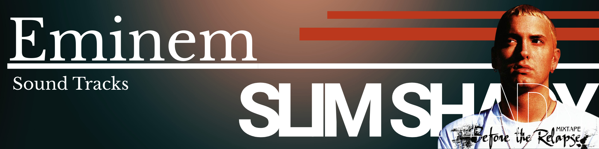

A música é uma das manifestações humanas mais profundas e universais, agindo como uma linguagem que transcende fronteiras geográficas e barreiras linguísticas. Desde os primórdios da civilização, ela tem sido utilizada para narrar histórias, celebrar rituais, expressar emoções complexas e fortalecer os laços comunitários. Seja através do ritmo percussivo que remete ao pulsar do coração ou de melodias sofisticadas que desafiam a nossa percepção, a música possui a capacidade única de alterar nosso estado psicológico, evocando memórias ou injetando energia em momentos de desânimo. Com o passar dos séculos, a evolução tecnológica e cultural permitiu que a música se fragmentasse em uma infinidade de gêneros e estilos, da precisão matemática das composições clássicas à liberdade crua do rock e à inovação sintética da música eletrônica. Hoje, ela está mais acessível do que nunca, permeando o nosso cotidiano através de fones de ouvido e telas, funcionando tanto como uma trilha sonora pessoal para a nossa rotina quanto como um poderoso instrumento de resistência política e identidade cultural. No fim das contas, a música não é apenas uma combinação de sons e silêncios, mas uma ferramenta essencial de conexão humana, capaz de dizer o que as palavras sozinhas muitas vezes não conseguem alcançar. Além disso, a música desempenha um papel fundamental na formação da identidade individual e coletiva. Desde a infância, somos apresentados a canções que marcam fases específicas da vida, criando uma trilha sonora que acompanha nosso crescimento e molda nossas referências culturais. Hinos nacionais, cantigas populares e músicas regionais carregam consigo valores, memórias e tradições que ajudam a consolidar o sentimento de pertencimento a um grupo ou nação. Ao mesmo tempo, estilos musicais específicos podem funcionar como símbolos de resistência e afirmação cultural, dando voz a comunidades historicamente marginalizadas e transformando o palco em espaço de reivindicação social. No âmbito científico, diversos estudos apontam que a música influencia diretamente o funcionamento do cérebro, estimulando áreas relacionadas à emoção, à memória e à criatividade. Ela pode atuar como ferramenta terapêutica, auxiliando no tratamento de transtornos psicológicos, na redução do estresse e até na reabilitação motora. A musicoterapia, por exemplo, demonstra como sons e ritmos podem contribuir para o bem-estar físico e mental, reforçando a ideia de que a música vai além do entretenimento e assume também um papel de cuidado e cura. A revolução digital ampliou ainda mais o alcance da música, democratizando sua produção e distribuição. Plataformas de streaming, redes sociais e softwares de edição permitiram que artistas independentes encontrassem público sem depender exclusivamente das grandes gravadoras. Esse cenário promove maior diversidade sonora, ao mesmo tempo em que desafia os modelos tradicionais da indústria cultural. A rapidez com que novas tendências surgem e se espalham evidencia como a música acompanha as transformações sociais, refletindo inquietações, desejos e debates contemporâneos. Por fim, é impossível ignorar o caráter quase transcendental que a música pode assumir. Em concertos, festivais ou simples reuniões entre amigos, ela cria experiências coletivas intensas, capazes de unir desconhecidos em um mesmo sentimento. Uma canção pode atravessar gerações, sobreviver ao tempo e continuar significativa décadas depois de sua criação. Assim, mais do que arte, a música é memória viva, é ponte entre passado e presente, é expressão do que há de mais íntimo e, simultaneamente, mais compartilhável na condição humana.